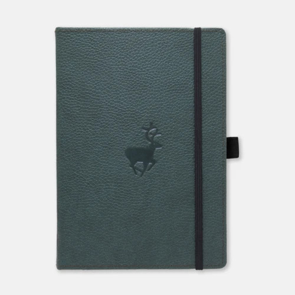
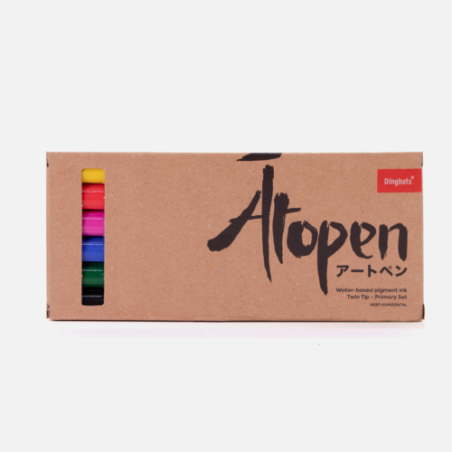

Dingbats
Dingbats* are produced by the oldest established company in Lebanon, Société Kamel Bekdache et Fils SAL (SKB). SKB is a privately held family business established in 1800 reaching its fifth generation. It is the first company in the entire region to attain both the ISO 9001:2020 and FSC® (FSC-C105099) qualifications, trading and converting high quality paper and board, while serving 1130 clients located in the Middle East, North Africa and Europe. Since 2011, SKB began manufacturing notebooks and is now the proud manufacturer of Dingbats*.
Stationary

From our signature collection. Each notebook has a hardcover bound with PU leather (100%
vegan) with a duck finely debossed on the cover. Printed on the inside cover of the notebook
are duck footprints that are so cute, you just want to tickle them.
Our paper? Well, we are the oldest established paper company in Lebanon and the
region, we know a thing or two about paper. Each page of 100gsm silk cream acid free
fountain-friendly FSC-certified paper is micro-perforated with a total of 96 sheets or 192
pages. And our notebooks open as flat as a pancake.
The paper used is acid-free, a depiction of longevity, archive-ability and
preservation.
Yes, yes, of course they have an inner pocket, bookmark and an elastic closure!
Oh, almost forgot to mention the pen holder, just perfect.
Pens

Ātopen or Artpen is the latest addition to the brand crafted all the way from Japan to get you the best in quality and style. Ātopen comes in a set of 6 primary colours with two tips and water-based pigment ink. A flexible brush tip and a fine tip in every marker making them ideal for calligraphy, art drawings, colouring, fine art, illustrations, doodling, and journaling. Please make sure to keep them horizontal.
Colours included in the Primary pack are: Pure Yellow - 050, Pure Red - 020, Pure Pink - 025, Pure Blue - 030, Pure Green - 040, Pure Black - 010
- Archival quality
- Fade proof
- Acid-free
- Lightfast
- Waterproof
- Bleed Proof
- Xylene-free
- Odourless
- And of course, best used with a Dingbats* Notebook!
Message from the Founder:
“My great great grandfather established one of the first paper shops in Lebanon in the early 19th century, trading high quality paper more or less continuously from then until the present day. I passionately believe that there’s still a place for this most traditional of materials in today’s high speed, digital world. Sometimes you need something that’s more tactile – more personal. Our wide range of Dingbats* Notebooks lets you choose the design, material and colour that reflects your own personality.”
– Jamal Bekdache